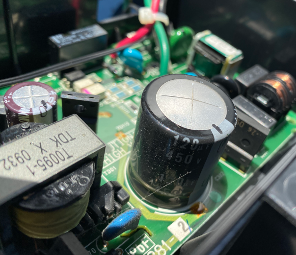
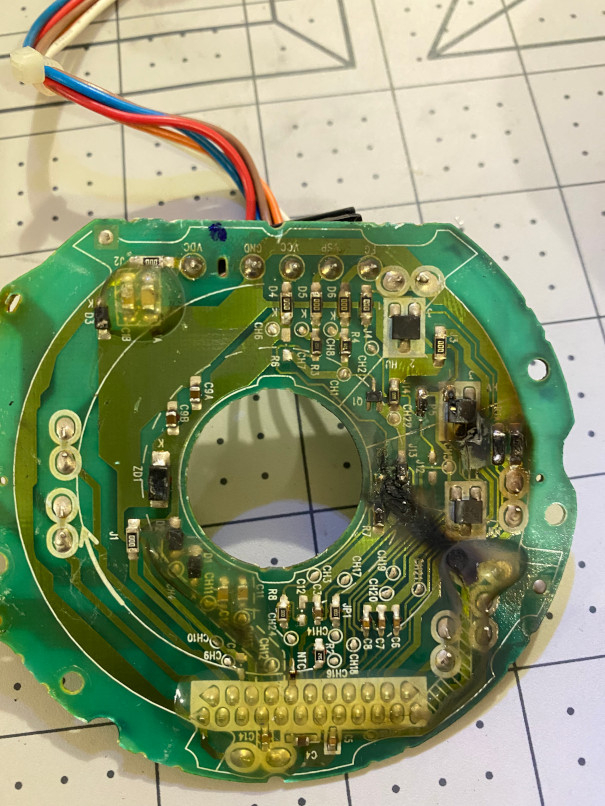
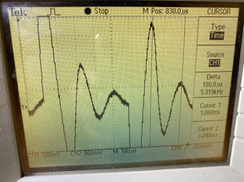
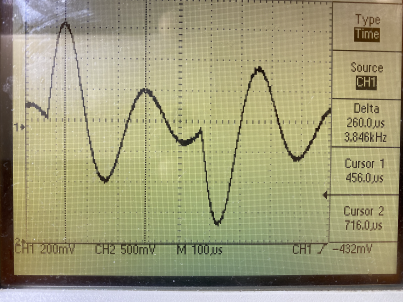
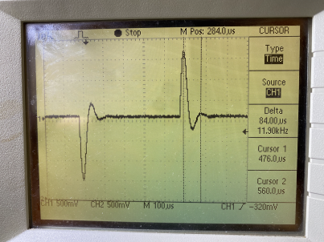
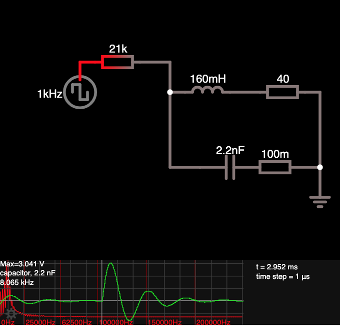

Repurposing a Brushless DC Motor from an Air Conditioning Unit
Ravi Saripalli
The Beginings
This project started with me stripping apart a failed BLDC
(Brushless DC motor)
from
my home air conditioner unit with a desire to repurpose it for other use. The
integral printed circuit board (PCB) inside this comapct motor was fried due to failed rectifier
bridge output capacitort(450V, 120uF) on the external PCB.
This bridge circuit on the external PCB provides 350VDC supply to the motor.
Also, it provides 15V DC and other control signals to internal PCB to drive the motor.
I have to track back to earlier events that led me to this point. It all
started with our indoor AC unit (Split System) suddenly stopping
with a faint spluttering sound in the middle of a winter morning. This happened
just a day after
I cleaned the air filter grill on the unit. I also placed a fragant cotton swab
for a warm and sweet ambiance.
Not surprisingly, family attributes the failure to my cleaning act!!!
So begins my journey into split AC units,
BLDC motors and their inner workings. Interested ... then read on.
First Dive
When I tried to start the unit with the remote the unit did
not respond and the usual green remote sensor light did not blink..
The AC unit on the wall controls the blower fan and two other small motors that move the
grill vanes to direct the air flow. The unit appeared to have lost power.
Examining the control board, I noted that the 1.5Amp slow acting ceramaic
fuse in the control board was blown. This
fuse was soldered to the board. Now,
I know why it was not easily repalceable fuse. When it fails, it means there is
something seriously wrong in either the PCB board or in the motors that it controls.
Trust me, one can't just replace the fuse and hope for the best. I blew 200$AU in a flash,
when I replaced a failed control board and fuse trying fix our
washing machine assuming the water leak was the cause and not investigating any further.
Post event I located a short at motor supply terminals(with a Megger) at 240V.
The Culprit
Further examination of the PCB showed the large output
filter capacitor
on the bridge rectifier had a slight bulge.
I tried to measure its capacitance with a multi-meter while in circuit, but it
did not give any meaningful results.

Knowing that its failure has implications to BLDC motor power supply, repalced it
with a new one. With the new capacitor and fuse the
PCB was alive and I
was able to operate the small louvers that deflect the air (driven by tiny motors) with
the remote control. But the main blower won't run but displayed an error code
suggesting a possible fault in the blower motor or the PCB. I disconnected blower motor and
checked the supply voltage pins on the external PCB (350V DC voltage for BLDC motor, and 15V for
its inernal PCB) they all looked good. So it appears that
the problem is likey to be in the motor. Perhaps, the fault in the filter capacitor
(failed open), would have introduced too much ripple in BLDC supply voltage that could
damage the motor.
A Good Ending
With winter in full swing the pressure was on
to get the unit going. So I ordered a replacement motor, which fortunately arrived
after a week despite the COVID mayhem. But now the issue is to figure out the
way to remove the old motor from the unit to replace it.
Fortunately
Daikin service manual
is up for grabs on the internet. The task of
removing the fan motor appeared very daunting with the requirement to disconnect the
Air Conditioner evaporator coils from the unit. A big job indeed.
But thanks to excellent tips from a
nice video
by a Daikin service guy, I could get to the blower fan without
dismantling the heat exchanger. Replacing the motor truned out to be a breeze.
After all this effort, with great trepidation I turned on the unit in heating mode with
high fan speed setting and it worked purring like a cat.
The air warmed up with nods of approval from my missus.
Post Mortem
This was the state of PCB inside the motor once I removed the top cover of the motor
assembly. Pretty bad ha :((

The stator is an enclosed unit with terminals of windings exposed. The rotor
is made of strong permanent magnet (possibly RareEarth Neodemium).
The rotor chases the magnetic field that is rotated
electronically switching the coils of the stator poles at right times
based on
the feedback of HAL (magnetic field sensors) senosors
embedded in the stator body. Alternately, one could use the back emf signal
as a sensing tool. I am still not sure as to which mechanism this motor uses.
Checking the four terminals on the stator block, it appears that there are three
coils connected in star fashion. The three coil resistances are 40ohms each. This
suggests that the stator windings are unlikely to be damaged and the motor failed due to PCB
components that could not tolerate large current spikes because of failed ripple
filter capacitor on the high voltage supply to the BLDC motor.
Once the PCB terminals are desoldered off the stator block face,
the PCB could be pried out of the stator casing.
Then the rotor simply can be pulled out
along with the rear bearing.
The following picture shows the terminal connections to the BLDC motor.
The motor connector has five lines. It also shows how the internal
PCB sits over the stator housing. The white blob on the IC
is dried out thermal conductivity paste to help
disspate heat via
top cover metal plate of the motor.(removed here)
1
red
Motor Supply 450VDc
2
blue
gnd
3
brown
Motor Coils Control Signal
4
orange
HAL sensor output
5
white
PCB Vcc 15V
Resurrecting the Victim
Now that I had some win with the Air Conditioner, and had a whiff of what a BLDC motor is
I was wanting to explore if I can use most of the usable part of the motor without the
internal and external control boards. The idea was to use Raspberry PI like IOT (Internet Of Things) devices,
to provide the necessary control signals and drive the motor with an external motor drive circuit
of my own making.
It means I have to think of providing control signals while sensing rotor position
with either HAL sensors or use sensorless method (using back emf signals from the coils).
Playing with MOSFETs to provide switching would be fun for I have never done such things before.
To start off I wanted to work at lower voltage (12-24VDC)level rather than at high DC voltage the motor
is designed for. I realise that I have to sacrifice the motor torque since the motor stator
windings are designed for high voltage and low currents (to achieve compactness).
For starters I wanted to get a measure of inductance of the motor windings, so that I can judge
the switching frequencies I need to operate at without stressing stator windings.
Inductance Measurement
This has turned into another side alley I had to explore to achieve my goal. After viewing
several youtube videos, decided to exploit my oscilloscope square wave reference output
with an LC circuit consisting of known capcitance values. Since the reference output can not source
much current, I used an NPN transistor switch with its base driven by the
the reference square wave signal. This enabled a square wave signal source at 1kHz that can
source reasonable currents.
Measuring the ringing frequency of the
circuit on square wave edge transitions, the inductance can be estimated from simple theoretical
expression for resonant frequency. I learnt, while this looks straight forward, there are many other
intricacies to consider if one is really interested in accurate inductance measurement. (eg. dependency
of series resistance on the frequency level the inductor is operating at).
Once the resonant frequency at different capcitance values were obtained
the inductance of the coil can be estimated from linear regression of
Capacitance versus log(Frequency).(Feq = 1/ 2.Pi.sqrt(LC)). The inductor I used
was something I cobbled up using a Ferrite core and some 28guage wire wound
over it. The ferrite core was from TV power chord noise suppresor. Although,
it is easy to get physical construct details such as number of turns, length and
cross sectional area of the inductor coil, the magnetic permeability is not all
that well defined for ferrite (it varies from 16 to 400 H/m)
Anyway, I had a stab at estimating it and taking the lower end ferrite permiability for the
coil. The estimated value was of the order of 14mH.
The following figure shows the simulation of the
circuit that approximates my experimental setup. I have omited my transitor based
switching circuit for simplicity and clarity. The
fully featured circuit simulator is
freely available and can be used interactively from your browser.
A real example that shows many good things are for free. And I was quite impressed
by what it can do.
Test
Cap.(nF)
Freq.(kHz)
Freq.(kHz)
Experiment
Simulation
1
53.5
12.8
14.2
2
75.4
10.4
11.9
3
104.3
9.4
10.1
4
111
8.7
9.8
5
235
5.8
6.8
6
346
4.8
5.5
Fitting the above data on a log-linear plot, the experimental data gave a
slope of -0.52 which is very close to theoretically expected value. (inverse Square root
reltion of capacitance with resonant frequency). The simulator gave exactly -0.5 as one would expect.
Finally the estimated value of indutance from the above data is 2.35mH. (About 1/6th of
my theoretical estimate based on inductor physical properties).
I am now satisified that I can get an order of magnitude estimate of
the inductance of my motor coil with this LC circuit set up.
With one winding of the BLDC motor hooked upto my resonant circuit
experimental setup, tried to see if I could see if I could observe
any resonance with 1kHz square wave source from the scope. Tried
50 to 100nF caps with no luck. Knowing that the motor coil inductance
is most likely to be much larger than my small home made coil (2.5mH),
I sort of guessed that I would have to move to lower capacitance values
to raise resonant frequency and overcome the damping due to 40ohm coil
resistance of the motor. Also, I ditched the transitor switching, and
added 21k resitor before feeding the scope signal to the Resonant Circuit.
This should reduce the current load on the reference signal while
enabling resonance measurements.
The following figure shows the oscillations (damped) during edge transition
with 10.75nF, 5.435nF green caps and a 2.2nF ceramic cap. While the first
two gave reasonable osicalltions to enable me to pick the reonant frequency
the small ceramit cap failed to provide what I expected. I expected the resonant
frequency to go up and be able to see more peaks and troughs and finally
nail down the inductance. The anticipated frequency with the ceramic
cap is 8.5kHz (if the previous estimate of 160mH is good)
The first two readings have given inductance
value of he coild to be of the order of 160mH. As suspected its value is
almost 80 times the coil I made for fun. G



Just to make sure my measurements are valid, I simulated the circuit
assuming 160mH inductance is good. The following simulation results with
2.2nF are shown below. Surprisingly, simulation showed resonant trace
that is different to what I got with experiment for this case. The frequency
output is of course close to the theoretical one. So the question is why
my experiment showed more damped oscillation making it hard to detect frequency
accurately. I tried different series resistances with the cap, to simulate
ESR but that did not change simulation result. I am intrigued.

So the next step is to get a proper signal generator to enable better
control on my inductance measurement method. I resurrected an IOT device I
previously purchased for my Blood Pressure meter reverse engineering project.
The device "Onion Omega 2+" was purchased during its crowd funding phase six
years back. It is a tiny device well engineered and extremely cheap.
I spent sometime getting the device on to breadboard, without having to
purchase header pin adaptors to allow for pitch change from 2mm to 2.5mm.
It has two I/O pins that can be configured as Pulse Width Modulators.
Wrote a shell script that allows configuration of the pins and setting pulse
width and frequency. Also, developed a tiny web interface using javascript
and PHP to control the PWM pin from browser.
PWM Setup Script (filename: pulse)
#!/bin/ash
# Author: Ravi Saripalli
# Date: 26th Aug. 2021
# pwm pins GPIO18/GPIO19
# omega2-ctrl gpiomux set pwm0/1 pwm
# I am using GPIO19 with pwm channel 1
# This is where all hardware control happens
PWMDIR=/sys/class/pwm/pwmchip0
if [ "$#" -eq 0 ]; then
if [[ -d $PWMDIR/pwm1 ]]; then
echo PWM GPIO 19 is already set
else
# Configure pwm1 ... on GPIO19
omega2-ctrl gpiomux set pwm1 pwm
# This will be Channel 1
echo 1 > $PWMDIR/export
echo PWM GPIO 19 is set
fi
exit
fi
# Sets PWM on GPIO18 given
# Frequency (Hz) and %Duty
Hz=$1
duty=$2
period=`echo $Hz | awk '{printf "%d\n", 1e9/$1}'`
dutyTime=`echo $Hz $duty | awk '{printf "%d\n", $2 * 1e7 / $1}'`
# We need to modify data in files under pwm1
# to change the singal on the GPIO
echo 0 > $PWMDIR/pwm1/enable
echo $period > $PWMDIR/pwm1/period
echo $dutyTime > $PWMDIR/pwm1/duty_cycle
echo 1 > $PWMDIR/pwm1/enable
#Finally send the confirmation response in JSON
echo {Hz: $1, Duty: $2}
Here is a mini
web based user interface
to control the PWM pin I developed. It uses AJAX call to
execute a PHP script that runs above shell script
on the onion.
PHP Script handling PWM Control on the Onion
<?php
// Author: Ravi Saripalli (29th Aug. 2021)
// Process the Json data from POST ajax call
// which proivdes Frequency, and Duty Cycle %
// Run my shell script that sets up the
// Hardware based Pulse Generator on the Onion
//
// Nb. If the JSON data in POST message is null
// we assume that we are trying to setup PWM
// In this instance pulse script does not need
// any inputs
// error_reporting(E_ALL); --> debugging
// Both of these will be null when trying to setup PWM pin
$Hz = $_POST['Hz'];
$Duty = $_POST['Duty'];
if ( is_null($Hz) ) { // just PWM setup
$out = shell_exec("/root/pwm/pulse 2>&1");
echo $out ; // return status
} else { // Setting signal pattern
$cmd = "/root/pwm/pulse " . $Hz . " " . $Duty . " 2>&1";
$out = shell_exec($cmd);
echo $out ; // Confirmation of successful freq, duty setup
}
?>
With the help PWM feature on the Onion, I now have a controllable square wave
in terms of frequency and duty. I repeated the experiment of measuring inductance
as before. But this time since I am able to vary the square wave frequency at will,
I looked for the resonant frequency by scanning several frequencies until the
amplitude of the voltage signal at the coil is at its maximum.(see the animation below)
These results are with a capcitance value of 52.4nF. And the measured
resonant frequency is 1.7kHz. This corresponds to inductance of 167mH. A result,
very similar to my earlier experiments that looked for ringing signal at 1kHz input
frequency. With the current setup, I could find resonant frequency at low capacitance
value of 2nF. The resonant frequeny was 9.8kHz which gave 131mH for the inductance
estimate. Overall, I am quite certain that the coil inductance is of the
order of 150mH. I think at too low capacitance value, I have a feeling
that we are getting close to parasitic capacitance of coil(presumably).
The resonant frequencies I measured with 2,11.4,52.4,97nf capacitors
indicate that corresponding inductances are (131,153,167,172mH).
Despite the variability, I am happy to take the average value for motor
control circuit design.